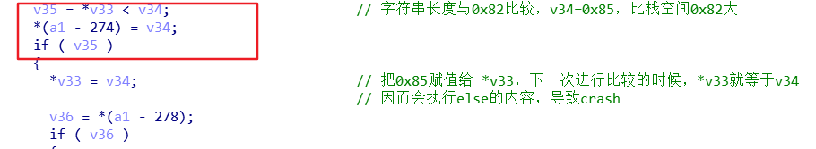

ISS6 webdav（CVE-2017-7269）
条评论环境：windows server 2003
装上IIS ，开启webdav
我们这里漏洞分析从poc开始，分析漏洞出现的原因。
漏洞成因分析
1.开启IE访问LocalHost ，用windbg 挂载w3wp.exe
2.利用python脚步，创建tcp链接，发送数据，让w3wp崩溃。
自己写代码，让 Sstr 可变，这样我们就能得到让其的崩溃的字符串的长度。
3.在崩溃点，上层打下断点。然后用 ba 数据断点，快速定位到崩溃的位置数据来自何处。
回溯调用栈空间，把断点打在 sub_673F5326，然后进行单步调试，遇到call函数的数据就注意esp 中传入的参数。
走到如下位置的时候，可以看到，由于输入的数据过长，导致 0x12ff90c 位置的低4位被0000 覆盖了
正常的情况下，0x12ff90c 应该存放 0x012ff804 ，被溢出数据的覆盖为 0x012f0000
接着
push [ebp-0x328] ebp-0x328 = 0x012f0000 ( 原本应该是 0x012ff804)
call edi ，edi = msvcrt!wcslen (77ba8ef2) 函数。
把 [ebp-0x328] 当作数据存放的指针，进行数据长度的计算。由于 0x012f0000 是被溢出数据覆盖了，因而发生了错误。
4.具体原因
在对字符串进行计算长度的时候：
<http://localhost/"+ sstr + “>
sstr=”0AAAAAAAAAAAAAAAAAAAAAAAAAAAAAAAAAAAAAAAAAAAAAAAAAAAAAAAAAAAAAAAAAAAAAAAAAAAAAAAAAAAAAAAAAAAAAAAAAAAAAAAAAAAAAAA”
首先，对上面的字符串进行计算，在内存中按UTF-8存放，所以长度为 0x108，结尾有个 00 00 结束的空字符，那么减去这2个00 ，长度为 0x106 。
接着，与0x104 比较，0x104是原本在栈空间上开辟的存放该字符串空间的长度。由于 0x106 大于 0x104 ，所以程序会调用堆分配函数，在堆上分配空间。
这之后，会把写入的字符串开头的http 部分替换为：c.:.\.i.n.e.t.p.u.b.\.w.w.w.r.o.o.t.
之前http头的时候，总共长度为 0x108，替换之后变成了 0x10A 。然后对栈空间进行写入的时候，以 0x10A / 2 = 0x85 的长度进行覆盖。
这里头部的赋值，是取栈空间的某个位置。
取头部的数据，按dword进行取，计数器ecx = 0x9 ，[esi] = 0x012bf35c
除去头部剩下的主体部分来自于堆空间的数据，ecx = 0x39，[esi] = 0x01c3cd98
注意这2个esi 值是不同的内存区域，一个是栈，一个是堆。
接着，仔细来看看漏洞成因。
If( v35 ) 这个判断很重要，它直接决定会不会进行qmemcpy 操作。
第一次进行判断，会进入if ，而红框处的操作，是直接导致溢出的原因。
查看汇编代码执行的情况， 第一次 ecx = [ebp – 454h] ，这里存放的是正常情况的栈空间大小，正常情况下，栈空间只分配了0x82 的大小。
我们的数据是 0x85 大于 0x82 ，所以会进入 if 中。
eax = 0x85 ，存放数据的长度。
[ecx] = 0x82 ，栈空间数据长度
进入 if 执行后
Mov dword ptr [ecx], eax 对应 IDA 中*v33 = v34
这就导致0x85 放入到 [ecx] 中，把正常的栈空间长度 0x82给修改为 0x85了。
这之后，程序的执行流程会第二次触发到该位置，那么这个时候，执行：
v35 =*v33 < v34
v34 还是我们数据的长度 0x85 ，而*v33 在上一次进入到if中的时候被修改为了 0x85 ，（这里本应该是0x82 )

那么v35=0，会去执行 else 中的qmemcpy 赋值操作，由于正常情况下的长度应该是 0x82，这里被修改为了 0x85 就导致了栈溢出。
那么目前看来，漏洞的成因可以认为是 *v33 = v34 导致的。若没有这一句，那么*v33 的位置会一直是正常的 0x82 值。
接着继续分析。第一次进行调用sub_673E9451（crash发生的函数） 之前，它会先把字符串的长度与 0x104进行比较。这是前面说的0x104 栈空间预留的长度，超过0x104 则会调用堆分配函数（staxmem!ExchMHeapFree）。字符串在内存中以Uicode的形式存放，所以长度是ascii形式的2倍。下面的第一个红框处:
Eax = 字符串的ascii形式的长度
Lea eax,[eax+eax+2] ; 对ascii长度还原为Uicode形式的长度，+2 表示结尾的空字符
因为 0x106 大于 0x104 ，所以会重新分配堆空间给它。
然后再去调用 sub_673E9451 函数，判断是否要进行栈空间赋值操作。
由于我们提供的字符串是 0x106 大于0x104，所以不会对栈空间进行赋值。
那么，这里又会重新把我们的字符串长度与0x104 进行比较，若大于0x104 则会分配堆空间。
那么，问题来了。第二个红框处，它直接把 [ebp-434h] 的值压栈，这个位置存放的就是我们的字符串长度，但这个长度是ascii 形式，也就是说它没有进行Uicode的还原，那这里的值就是 0x85，0x85 小于 0x104 。那再次调用sub_673E9451 的时候，就会对栈空间进行复制操作了。
根据上述分析，总结一下关键地方执行流程：
1.初始化栈空间的长度0x104用于存放字符串
2.计算用户提供字符串<http…>的长度，这是Unicode的存放形式，转成ascii 然后进行计算，假设是0x82个字符，没算结尾的空字符。
3.判断字符串是否大于0x104，先转换成Unicode 形式：0x82*2 + 2 = 0x106，它大于0x104，所以分配新的堆空间，将字符串复制到堆上。
4.然后调用sub_673E9451函数，在该函数中把字符串<http..>头部替换为虚拟路径：C:\intet…，再次进行判断字符串的ascii码的长度，这里是0x85，因为头部被替换过变长了。然后，判断字符串的长度与 0x82 ，0x85 大于 0x82，栈空间不足以放下字符串的内容，那么修改栈空间起始位置 ebp-434h 被修改为 0x85。
5.再次取字符串的长度，这次直接取字符串的[ebp-434h]的值，它是字符串ascii长度，即是0x85。然后与 0x104 比较大小，0x85 小于0x104，所以不进行堆空间分配。
6.调用sub_673E9451函数，同样，得到字符串的ascii码长度 0x85，这次与[ebp-434h] 进行比较时，[ebp-434h] = 0x85，它们大小相同，所以认为栈空间可以保存该字符串，则用qmemcpy进行复制，导致栈溢出，溢出字节数 0x85 – 0x82 = 0x3 字节，这回修改了该栈空间中指向数据的指针。
7.调用 __imp_wcslen 函数用来计算栈空间的字符数，那么先取该指向该栈空间的数据指针，取的时候发生错误，该位置处不是一个合理的指针，指向的内存无效。
从上面梳理出的思路可以看到，问题出在第二次计算字符串的长度的时候。
在第一次计算字符串长度并于0x104进行比较时，它知道字符串是Unicode形式存放的。但是由于字符串大于0x104 ，所以进行了堆分配，并且把存放字符串长度的位置[ebp-434h] 修改为了这个字符串的长度。
然后第二次进行字符串长度计算，它这就不知道字符串是Unicode，而是当成了ascii 形式，再去与0x104比较，因为小于0x104所以没有分配堆。
这就是漏洞成因，第二次计算字符串长度错误的把 Unicode字符当成ascii字符。
若要打补丁应该将：
-|-|-
push dword ptr [ebp-434h] |->> mov [ebp-434h], eax
| lea eax, [eax+eax+2]
| push eax
漏洞利用
前面分析了，数据过长，会导致栈溢出。正常的情况下的栈空间只有0x82，前面溢出字符串长度0x85，多了3个word : 0x0041 0x003e 0x0000
0x012bf804 + 0x104 = 0x12bf908 ，正常情况下数据最多只能存放到0x12bf904，0x12bf908。就是结束的位置。
溢出的0x0041 0x003e 0x0000，覆盖了0x12bf908和0x12bf90c的低4位。
正常的情况下：0x12bf908 存放0x104 * 4 + 2 = 0x412，这个是存放数据的栈空间大小，加上的 2 的意思是UTF-8空字符的占位，一个空字符占2个byte。注意 0x412 是按byte 计数的。0x12bf90C 存放指向数据开头的地址，即0x012bf804 指向数据的开头。如下图。
溢出是3个word位，不仅修改了0x12bf908存放长度的位置，也修改了0x12bf90C存放指针的位置。指针被修改，就导致了最终的错误。
那么，这里就可以通过溢出，修改0x12bf90C 处的数据指针。让它指向一个地址。
因为调试的环境是 windows 2003 server ，没有ASLR 存在，所以可以溢出让他指向一个固定地址。
分析别人写的exp，可以知道他们选取的固定地址是0x680312c0，这是rsaenh.dll 中的一段可读可写地址。
第一次调用sub_673E9451 的时候，由于字符串长度大于 0x82，是不会对栈空间进行写操作。这里字符串的长度是 0xaa
但是，它会修改存放字符串长度地址的值，把0x82 该为 0xaa。
因为栈空间不足，所以返回 eax = 1 ，
Mov esi , eax ; esi = 1
Cmp esi , 1 ; 相等，所以不跳转，将重新申请空间。
…
Call httpext+0x5eeb(673e5eeb) ; 把字符串长度与 0x104比较，看是否要重新申请空间
这里由于把Unicode字符串当成了ascii 去进行计算，长度也就是 0xaa ，与 0x104 比较，小于0x104 ，所以不会申请新的空间。
第二次调用sub_673E9451 的时候，前面没有申请新的空间，但是存放字符串长度地址的值却被修改为0xaa ，这就会在栈空间上写上 0xaa dword 的数据。如下图。
可以看到，数据指针被修改为0x680312c0，且栈空间的实际大小被修改为0x02020202。
这个0x02020202的作用，就是当再一次用sub_673E9451 函数，这个函数的栈空间大小会以 0x02020202 / 8 去计算。简单的说，下一次使用sub_673E9451 函数，将会对 0x680312c0 所指向的位置，写入数据，那么写入数据的长度0x02020202 / 8 = 0x00404040。
但是，为什么下一次还会执行到这个函数呢。
这是因为，如果发送的数据包含2个<http。。。>部分，那么这里的代码会依次解析每个
Exp 中包含2个
下面，来看第三次sub_673E9451 触发。
从图中可以看到，长度变为了 0x00404040 ，0x680312c0 地址里还没有内容存在。
进入到sub_673E9451 之后，还是会进行字符串长度的比较。如下图。
这里，我们输入的字符串长度是 eax = 0x310 ，程序认为的栈空间的大小是 [0x012ff800] = 00404040，这值前面说过怎么来的。这样一比较，发现栈空间大于输入的字符串长度，所以会向栈空间的数据指针处写入数据。但数据指针也被修改了，改成了固定地址0x680312c0，这之后就会向地址0x680312c0 中写入数据。如下图。
在0x680312c0写入了数据之后，返回值给 eax = 0，表示写入数据完成，栈空间够用，就不会去与0x104比较大小申请新的空间。而是直接跳到下面0x673f5486 处继续执行。实际上，并不是向栈中写入的数据，而是向固定地址写。
而且可以看到写入的数据是 bbbbb开头，说明这是在解析第二个
那么，到这里通过栈溢出，只是完成了对固定地址空间写入数据的操作。
之后程序回到上层函数，继续调试。
可以看到向固定地址写入数据的函数是 sub_673F560E ，那么控制eip的函数在 sub_673EAB69。
继续跟进这个函数
继续进入sub_673F5627 函数，可以发现这个函数里面再次使用到了 sub_673E9451
这次与前面分析的情况一样，第一次调用sub_673E9451的时候，不会对栈空间写入数据，第二次才会造成栈溢出，同样覆盖了数据指针为固定地址0x680312c0。
唯一不同的是这次固定地址0x680312c0 中已经有了数据。
那么第三次调用sub_673E9451函数时，这里会取 [ ebx = [ebp-23c] ] 的值，这个位置实际上是栈空间中一个虚函数的指针，它在栈溢出的是被覆盖了，覆盖成一个固定地址0x680313c0。
所以，ecx 本应是一个虚函数指针，但被覆盖一个固定地址，后续将会继续把ecx 当成指针去用，这就提供了控制eip 的机会。
这之后，进入sub_673E9451函数到中，注意ecx的变化 ，取 [ecx + 10h] ，因为ecx 是个固定地址，里面内容是可控的，所以 [ecx+10h] 当然可控。
继续进入到 call httpext!DllCanUnloadNow+0xb127 (673f6c7b)
Ecx 值给了 esi ，继续跟踪，call httpext!DllCanUnloadNow+0x17a81 (674035d5)
接着，在674035d5 函数中，看到ecx 赋值给 edi，[edi] 值给了eax ，最终call [eax+24h]
因为 ecx 值是固定地址，可控。那么edi = [ecx] 的值也可控，且 eax = [edi] 也可控，所以 [eax +24h] 可控，那这里通过call [eax+24h] 就能做到控制eip。
因为没有ASLR的原因，接下来就是去寻找合适的ROP。
ROP 首先需要劫持栈，这就根据call [eax+24h] 进去之后，看那个寄存器是可控的数据，很明显这里是 ecx ，ecx 的值实际上就是第二个url中的数据。还需要注意的是 url 在内存中以Unicode形式存在，且有些特殊字符不能用，比如：“<”，“>”，“/”等。所以shellcode 用的是alpha shellcode。
alpha shellcode 一段全由可见字符组成的shellcode，它用来解码后面真实功能的shellcode。
题外话：如果这是一个0day，前面的漏洞成因分析不成问题，那么在考虑利用的时候，如何去控制eip呢。我觉得首先要明白在发送的数据中要包含多个
第一个url 用于栈溢出，知道有个可控的数据指针，溢出数据尽可能的多。这样做的目的是，要是栈中某些地方数据会被call 使用，那这就提供了控制eip的机会。
第二个url它是写入固定地址中的数据，这个url有什么用呢，当然是用来存放shellcode 或者ROP等。那这个url的数据会被放到哪里呢？放栈上长度太长，可能不太合适。栈不能放，那只能放堆上，既然有个可控的数据指针这肯定是用来放shellcode最合适了。而且经过分析，发现栈溢出的数据指针，是可以向里面写入数据的，且数据就来自第二个url。
分析到这里，有了可控的地址，和数据。还差eip的控制了。
那根据前面的想法，第一个url 用于栈溢出，数据尽量多，然后单步调试去寻找是否有call 栈上数据的情况。这样大概能找到这个 call [eax+24h] 。
另外如果有ASLR，那这个漏洞就没用了。